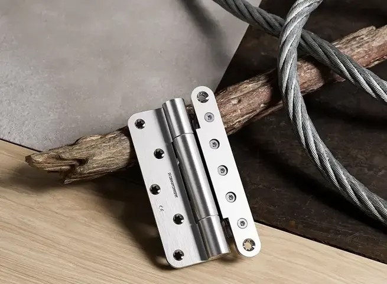

Универсальная система петель для нагруженных и жилых дверей: разные диаметры и длины цилиндра, много отделок.
| VX | для интенсивных проходов и входов |
| VN | нагруженные двери до 200 кг, реновация |
| VG | стеклянные двери |
| V | 2- и 3-частные петли для жилых дверей |